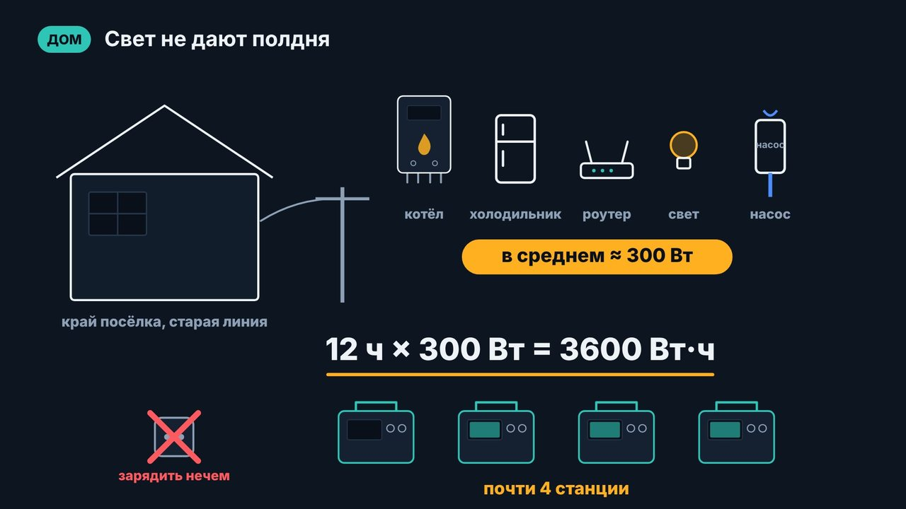

Генератор чи зарядна станція: що обрати для квартири й будинку
Андрій живе на дев'ятому поверсі, його батьки — у приватному будинку за містом. Одна зима, одне питання: генератор чи зарядна станція? Для квартири відповідь дає закон, для будинку — арифметика. Герої вигадані, цифри — з інструкцій виробників і правил українських відомств.
Ролик російською, 8:31. Не відкривається? Дивитися на YouTube або читайте розбір нижче — у ньому все те саме.
Впишіть своє навантаження, тривалість відключення і дані станції та генератора — калькулятор покаже, чи вистачить станції, скільки бензину й мотогодин піде і що дає зв'язка.
Відкрити калькулятор1Квартира: генератор на балкон не можна
Держенергонагляд пише прямо: генератори не можна використовувати в квартирах — навіть на балконі. Генератор ставлять тільки на відкритому повітрі, не ближче 6 м від вікон, дверей і гаражів. Шість метрів — це висота приблизно двох поверхів; на балконі такої відстані немає.
Причина — чадний газ. В інструкції Honda сказано: вихлоп містить чадний газ, у нього немає ні кольору, ні запаху. З балкона його затягує у ваші вікна й у вікна сусідів згори. Узимку 2022 року ДСНС повідомляла про отруєння на Київщині: генератор працював у житловій кімнаті, людина загинула.

2Станція для квартири
Холодильник, роутер і світло за одне відключення беруть близько 750 Вт·год — так ми порахували в випуску 1. Для прикладу — станція EcoFlow DELTA 2: 1024 Вт·год, акумулятор LiFePO4, чиста синусоїда. Одне відключення вона закриває із запасом. Від розетки заряджається потужністю до 1200 Вт, повністю — приблизно за 1,2 години, тож вистачає навіть короткого вікна зі світлом. Як обрати між готовою станцією і власним комплектом — у випуску 2.
Дві умови з інструкції. Заряджається станція тільки при 0…+45 °C — на морозному балконі не зарядиться, тримайте її в кімнаті. Коли зникає світло, перемикається на акумулятор не довше ніж за 30 мс; виробник пише, що це не ДБЖ з нульовим перемиканням, і не радить підключати сервери й робочі станції. Холодильнику й роутеру така пауза не страшна. Якщо ваш котел після перемикання перезапускається — залиште йому окремий ДБЖ з випуску 3.

3Будинок: скільки енергії на відключення
У приватному будинку котел, холодильник, роутер, світло й насос свердловини. Припустімо, в середньому будинок бере 300 Вт. Дванадцять годин без світла — 3600 Вт·год. Станція на 1024 Вт·год з урахуванням ККД інвертора (близько 0,9, випуск 5) протримає такий будинок близько трьох годин, на 12 годин потрібно майже чотири такі станції — і зарядити їх нічим, поки світла немає.

4Генератор: що в паспорті
Приклад — інверторний Honda EU22i для європейської мережі: номінальна потужність 1800 Вт, максимальна 2200 Вт, 230 В 50 Гц, бак 3,6 л. На повній потужності бака вистачає приблизно на 3 години. Для американської версії тієї самої моделі Honda вказує 8,1 години на чверті потужності. Отже, літр бензину дає близько 1,6 кВт·год на повній потужності й близько 1 кВт·год на чверті: недовантажений генератор витрачає бензин гірше. У батьків навантаження 300 Вт — менше за чверть. Якщо ганяти генератор усі 12 годин, за нашою оцінкою піде близько 5 літрів і 12 мотогодин.

5Де поставити і як підключити
Тільки надворі. Держпраці вимагає не менше 6 м до вікон, дверей і стін будинку і не ставити генератор у гаражі, підвалі чи під навісом, що щільно прилягає до будинку. Генератор заземлюють за інструкцією виробника, робить це фахівець.
Підключати генератор до проводки через розетку Держпраці називає категорично забороненим: напруга може піти в зовнішню мережу, це смертельно небезпечно для ремонтної бригади. А якщо світло повернуть, поки генератор працює, буде коротке замикання і можлива пожежа. Правильно — через перекидний рубильник або автомат введення резерву (АВР), який стоїть після лічильника та ввідного автомата. Робить це електрик.

6Олива, бензин і шум
Оливу за інструкцією Honda міняють перший раз через 20 годин роботи, далі — кожні 50 годин або раз на 3 місяці. Якщо світло вимикають через день по 12 годин, за місяць набігає 180 мотогодин — це 3–4 заміни оливи. Бензин Держпраці велить зберігати в щільно закритій металевій тарі, подалі від генератора, електрообладнання й обігрівачів, а заправляти — тільки при вимкненому й охолодженому двигуні. І генератор чути: вдень звикають, уночі він заважає і вам, і сусідам.
7Генератор + станція
Генератор працює не постійно: вмикається приблизно на 1,2 години, живить будинок і водночас заряджає станцію потужністю 1200 Вт. Разом це близько 1500 Вт — генератор завантажений майже повністю, і літр бензину працює краще. Потім генератор вимикається, і близько трьох годин будинок тихо живе від станції. За 12 годин без світла двигун напрацює близько 3,4 години замість 12 — мотогодин і замін оливи втричі менше. Бензину, за нашою оцінкою, піде близько 3,3 л замість 5,3 л. За інструкцією станція приймає 220–240 В 50 Гц, інверторний генератор видає 230 В 50 Гц.

Як обрати
- Квартира — генератор не можна навіть на балконі: станція або власний комплект.
- Будинок — порахуйте, скільки Вт·год іде за одне відключення.
- Якщо це менше за ємність станції і світло дають достатньо, щоб її зарядити, — вистачить станції.
- Якщо відключення довгі або в будинку насос і котел — потрібен генератор: надворі, за 6 м від вікон, дверей і стін, через рубильник або АВР, підключає електрик.
- Додайте до генератора станцію — менше бензину й оливи, тиха ніч.
Джерела
- Держенергонагляд — як правильно підключити електростанцію (генератор) до будинку, kmu.gov.ua, 17.11.2022: не в квартирах, навіть на балконі; 6 м від вікон, дверей, гаражів; рубильник або АВР після лічильника та ввідного автомата.
- Держпраці — вимоги безпеки під час роботи з електрогенераторами, ДТКТ, 15.01.2026: 6 м від стін, вікон і дверей; заземлення; підключення через розетки заборонено; зберігання пального.
- ДСНС через «Еспресо», 26.11.2022 — отруєння чадним газом на Київщині.
- Honda EU22i Owner's Manual — чадний газ, заправка, заміна оливи 20 год / 50 год; Honda UK — 1800/2200 Вт, 230 В, бак 3,6 л; Honda Australia — 3 год на баку.
- 🌐 Honda US, EU2200i — 3,2 год на номіналі й 8,1 год на ¼ навантаження (європейські сторінки цього не дають).
- EcoFlow DELTA 2 User Manual V1.1 — 1024 Вт·год, 1800 Вт, заряд 1200 Вт ≈ 1,2 год, заряд при 0…45 °C, EPS до 30 мс, вхід 220–240 В.
Перевірено 16 листопада 2026 р. Знайшли помилку — напишіть у коментарях під роликом.